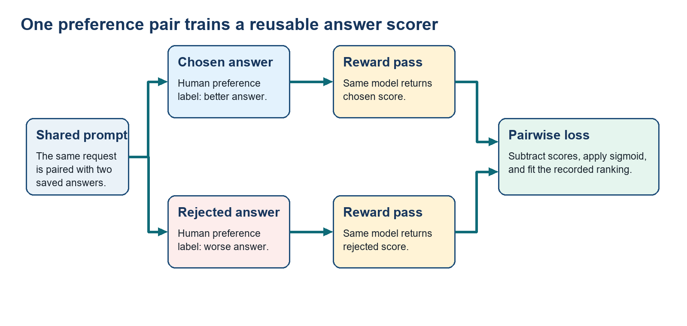

2 DPO for preferred answers
SFT can imitate one demonstrated answer but cannot rank it against another plausible answer. A chosen/rejected pair supplies that missing comparison. This chapter first uses reward-model training to explain how pairwise scores work, then shows how DPO learns from the same kind of pair without training that scorer. DPO and online RLHF are alternative uses of preference evidence, not required consecutive stages.
Direct Preference Optimization (DPO): An offline preference-training method that increases the probability of a chosen completion relative to a rejected completion, while measuring that change against a frozen reference policy. It uses recorded pairs rather than a learned reward model or fresh online rollouts.
Reinforcement Learning from Human Feedback (RLHF): The classic route from preference labels to online policy optimization: train a reward model from the labels, generate fresh completions, score them with that model, and update the policy.
A preference record has the form \((x,y^+,y^-)\): one prompt, a chosen completion, and a rejected completion. Classic RLHF first converts many such judgments into a reward model; DPO fits the comparison directly.
2.1 Learning a scorer from comparisons
A preference record identifies the better of two saved answers, but it does not automatically assign a score to a new answer. Classical RLHF therefore needs a reusable scorer before it can evaluate fresh model attempts. Score both saved answers, turn their score difference into training feedback, and then test the scorer on unseen pairs and fresh answers.
- Reward model: A learned scalar scoring model. Given a prompt and a completion, it returns a score and is trained to rank the human-chosen completion above the rejected completion.
Classical RLHF uses that learned score to optimize the policy on fresh completions.
Code 2.1. A preference record pairs chosen and rejected text answers. This is runnable Python data construction. It takes no external input and creates a dictionary named preference; it prints nothing and changes no model state. The expected result has exactly the keys prompt, chosen, and rejected, each mapped to a string.
preference = {
"prompt": "Explain why a test failed.",
"chosen": "Read the first failing assertion and fix that cause.",
"rejected": "The test is probably flaky; rerun it.",
}The three fields are text strings, not precomputed policy numbers. During reward-model training, transformers tokenizes the prompt plus each completion and the reward head returns two scalar scores. During DPO, the same strings are teacher-forced through the current and reference policies to produce the four full-answer log probabilities used by its pair loss. The record therefore supplies evidence; the model forward passes supply the numerical values.
A reward model learns a scalar score from chosen/rejected pairs so that classical RLHF can score fresh answers during training. That score predicts the preference pattern in its data; it does not guarantee truth, safety, or task success. Evaluate the scorer before letting an online optimizer reinforce its outputs.

A reward model makes preference data reusable for fresh on-policy rollouts, but its score is still a proxy that a policy can exploit.
Calculate the reward-model pair probability: For one preference pair, the reward-model loss asks only whether the chosen answer receives a higher scalar score than the rejected answer. Under the logistic Bradley–Terry assumption, the sigmoid turns that score difference into the ranking model’s predicted probability of the observed preference ordering. The value need not be calibrated and does not measure factual truth or safety.
Sigmoid \(\sigma\): A function that converts any real-valued margin \(u\) into a number from zero to one. Exponentiate the negative margin, add one, and take the reciprocal. A zero margin becomes 0.5; a larger positive margin moves the result toward one.
The two numeric inputs come from evaluating both answers with the same trained reward model: tokenize \(x\) with \(y^+\), run the model, and read its scalar reward-head output \(r_\psi(x,y^+)\); then repeat with \(x\) and \(y^-\) to obtain \(r_\psi(x,y^-)\). An implementation may batch the two evaluations. These are unbounded learned scores, not probabilities. The symbol \(\psi\) identifies reward-model parameters and keeps them distinct from critic parameters \(\phi\). The sigmoid is applied only after the score difference is formed.
\[ \mathrm{ℓ}_{\mathrm{RM}} = -\log \sigma\left(r_{\psi}(x,y^{+}) - r_{\psi}(x,y^{-})\right) \tag{2.1}\]
Variables
- \(\ell_{\mathrm{RM}}\): Loss for one recorded preference pair.
- \(r_\psi\): Scalar reward-model function with parameters \(\psi\).
- \(x\): Prompt shared by both answers.
- \(y^+\) and \(y^-\): Chosen and rejected completions.
Mechanism: Subtract the rejected score from the chosen score, apply the sigmoid to obtain preference probability, and take the negative logarithm. Batch training averages the one-pair losses. Interpretation: Fit a ranking model that predicts which completion a rater preferred; this does not establish factual truth or safety. Scale: Reward-head outputs lie on an arbitrary learned scale, whereas the sigmoid output is a probability. The natural-log loss is reported in nats per preference pair.
Code 2.2. RewardTrainer fits scalar answer scores from preference pairs. This is an abbreviated, version-sensitive TRL excerpt, not a standalone runnable program. It requires RM_DIR, reward_model, tokenizer, and prepared rm_train_ds and rm_eval_ds datasets. Calling train() updates the reward-model parameters and writes trainer outputs under RM_DIR; the exact metrics depend on the data and configuration, so no numerical run is claimed here. The class and argument names reflect the course example and must be checked against the installed TRL release.
from trl import RewardConfig, RewardTrainer
reward_cfg = RewardConfig(output_dir=RM_DIR, learning_rate=1e-5)
reward_trainer = RewardTrainer(
model = reward_model,
args = reward_cfg,
train_dataset = rm_train_ds,
eval_dataset = rm_eval_ds,
processing_class = tokenizer,
)
reward_trainer.train()rm_train_ds and rm_eval_ds contain prompt/chosen/rejected records, reward_model returns one scalar per answer, and TRL batches the pairwise loss. A successful call returns control after training; it does not by itself establish that the scorer learned the intended quality signal. The project must still check held-out ranking accuracy, deliberately misleading answers, and whether the scorer follows task quality rather than superficial style.
- Application Programming Interface (API): The names and calling rules a software package exposes to code. TRL class and argument names can change between releases, so verify them against the installed version.
Example: reward-model pair probability
For one fixed prompt, a trained reward model receives a saved chosen completion and a saved rejected completion.
Inputs and measurement
Run the reward model once on each prompt-completion pair and read the scalar reward-head outputs: 2.0 for the chosen answer and 0.5 for the rejected answer.
Calculation
- Calculation: \(\sigma(2.0-0.5)=\sigma(1.5)=1/(1+e^{-1.5})=0.818\); \(\ell_{\mathrm{RM}}=-\log(0.818)=0.201\) nats.
Interpretation: The logistic ranking model assigns probability 0.818 to the recorded ordering and incurs pair loss 0.201 nats. The value is not automatically calibrated and does not measure factual correctness or universal answer quality.
- Reward-model exploitation: A policy can learn patterns that raise a learned reward score without delivering the quality the score was intended to represent. For example, it may become unnecessarily verbose, imitate phrases that raters tended to favor, or exploit a gap in the scorer’s coverage rather than solve the user’s task.
Test the scorer before using it for online optimization.
Held-out ranking: Measure pairwise accuracy on prompts and responses excluded from training.
Adversarial answers: Check fluent style, length, refusal language, and out-of-distribution text that may be mistaken for quality.
Fresh generations: Compare reward-model rankings of current policy outputs with human or trusted task-evaluator judgments.
A high score on training pairs is not sufficient evidence that fresh behavior will receive the intended reward.
This limitation motivates DPO. A learned reward model can score fresh rollout behavior, which enables online RLHF, but it adds a proxy that must be evaluated against the behavior it represents. DPO removes that intermediate scorer during its offline update and instead compares the recorded chosen and rejected text answers directly.
2.2 Turning answer probabilities into the DPO loss
Teacher-forced token probabilities already provide one score for a fixed written answer. DPO now needs four such scores from one chosen/rejected pair and a stable comparison point for interpreting their changes. Define the unchanged reference policy, label the four scoring passes, and then combine their log-probabilities into the DPO margin.
- Reference policy \(\pi_{\mathrm{ref}}\): A frozen copy of the starting language model used to measure how far DPO moves the trainable policy. It is often an SFT checkpoint, but DPO only requires a suitable fixed reference with the same tokenizer and answer support. Like \(\pi_\theta\), it maps the same prompt and prefix to a complete next-token distribution. Its token probabilities and answer log-probabilities come from the forward-pass, normalization, token-selection, and aggregation steps introduced in Chapter 1.
DPO applies fixed-answer scoring to one prompt \(x\) and its saved chosen and rejected texts \(y^+\) and \(y^-\). It does not generate replacement answers while calculating the pair loss. There are four conceptual scoring evaluations; software may batch them.
Current policy, chosen answer: Score \(x\) with \(y^+\) under the trainable policy to obtain \(\log\pi_\theta(y^+\mid x)\).
Current policy, rejected answer: Score \(x\) with \(y^-\) under the trainable policy to obtain \(\log\pi_\theta(y^-\mid x)\).
Reference policy, chosen answer: Score the same \(x\) and \(y^+\) under the frozen reference to obtain \(\log\pi_{\mathrm{ref}}(y^+\mid x)\).
Reference policy, rejected answer: Score the same \(x\) and \(y^-\) under the frozen reference to obtain \(\log\pi_{\mathrm{ref}}(y^-\mid x)\).
The four resulting scalar full-answer log-probabilities are model scores, not human ratings and not newly generated answers. Only the current-policy passes receive gradients; the reference passes use the unchanged checkpoint without gradients.
Natural logarithms turn the answer-probability product from Chapter 1 into an equivalent sum that is stable for long text.
\[ \log \pi_{\theta}(y \mid x) = \sum_{t=1}^{T}\log \pi_{\theta}(y_t \mid x, y_{<t}) \tag{2.2}\]
Variables
- \(x\) and \(y\): Fixed prompt and complete written answer.
- \(y_t\) and \(y_{<t}\): Recorded answer token at \(t\) and the prefix before it.
- \(T\): Number of answer tokens.
- \(\pi_\theta\): Trainable next-token policy.
Mechanism: Take the log probability of each recorded next token and sum across the answer; logarithms turn the probability product into a stable sum. Interpretation: Produce one log-probability score for a fixed text answer under the trainable policy.
Example: three token scores form one answer score
A fixed answer has three recorded tokens whose gathered log-probabilities are −0.20, −0.50, and −0.10.
Inputs and measurement
Teacher forcing supplies the three token positions; log-softmax and gather read the current policy’s log-probability of the recorded ID at each position.
Calculation
- Answer log-probability: −0.20 + (−0.50) + (−0.10) = −0.80
Interpretation: The answer receives full-sequence log-probability −0.80 nats. DPO repeats the same sum for chosen and rejected text under both current and reference policies.
For one answer, DPO subtracts the reference policy’s full-answer log probability from the trainable policy’s full-answer log probability. This is the logarithm of a probability ratio, so it asks how much more or less likely the current policy makes that same written answer than the reference does. DPO calculates this quantity once for the chosen text and once for the rejected text; subtracting the second change from the first asks whether training has shifted probability toward the chosen answer rather than merely changing both answers together.
- Kullback-Leibler (KL) divergence: A numerical measure of how one probability distribution differs from another. In preference and online objectives it discourages the trainable policy from moving too far from a frozen reference, but it does not measure factual correctness.
In the KL-regularized objective from which DPO is derived, a larger coefficient \(\beta\) places more weight on staying near the reference policy. Rewriting the hidden reward through policy/reference log-ratios makes the same \(\beta\) multiply the logistic preference margin. It is therefore the regularization scale in the derivation and the margin scale in the implemented loss.
The same value appears in both forms because the hypothetical score is defined as \(\beta\) times a log-ratio in Equation 2.4. Changing \(\beta\) rescales both the KL cost in the starting objective and the preference margin in the DPO loss.
A normalized optimal-policy expression explains why reference-policy ratios appear. For each fixed prompt, the standard derivation maximizes expected preference score minus \(\beta\,\mathrm{KL}(\pi\Vert\pi_{\mathrm{ref}})\) over a normalized answer distribution. It assumes \(\beta>0\) and that the reference assigns nonzero probability wherever the optimized policy may place probability. Under those assumptions, higher-scoring answers receive more relative weight while the reference anchors the change; a prompt-specific normalization makes the answer probabilities sum to one.
\[ \pi^{*}(y \mid x) = \frac{\pi_{\mathrm{ref}}(y \mid x)\exp\left(r(x,y)/\beta\right)}{Z(x)} \tag{2.3}\]
Variables
- Optimal policy: The probability distribution that maximizes the regularized objective.
- \(\pi_{\mathrm{ref}}\): Frozen reference probability for answer \(y\) after prompt \(x\).
- \(r(x,y)\): Hypothetical preference score, not a separately trained scorer used by DPO.
- \(\beta\): Positive coefficient relating log-probability change to the preference-score scale.
- \(Z(x)\): Prompt-specific normalization that makes answer probabilities sum to one.
Mechanism: The exponential increases relative weight for higher preference scores, the reference ties that change to known behavior, and \(Z(x)\) normalizes the result. Interpretation: Express an ideal preference-weighted policy. \(Z(x)\) cancels when chosen and rejected answers for the same prompt are compared.
Solve the normalized expression for the hypothetical score before comparing the two answers. Taking the logarithm turns the policy-to-reference ratio into an additive term, while the prompt normalization remains an additive constant shared by every answer to that prompt.
\[ r(x,y) = \beta\log\left(\frac{\pi^{*}(y \mid x)}{\pi_{\mathrm{ref}}(y \mid x)}\right) + \beta\log Z(x) \tag{2.4}\]
Variables
- \(r(x,y)\): Hypothetical preference score for answer \(y\) after prompt \(x\).
- \(\pi^*\): Ideal preference-weighted policy from the previous equation.
- \(\pi_{\mathrm{ref}}\): Frozen reference policy.
- \(\beta\): Positive scale relating policy log-ratios to the preference-score scale.
- \(Z(x)\): Normalization shared by every answer to prompt \(x\).
Mechanism: Divide ideal-policy probability by reference probability, take the natural logarithm, scale it by \(\beta\), and add the prompt-specific normalization term. Interpretation: Recover the score represented by one policy-to-reference probability shift. When chosen and rejected scores for the same prompt are subtracted, their shared normalization terms cancel.
Now subtract the rejected answer’s recovered score from the chosen answer’s score. The shared prompt-normalization term disappears, leaving only the difference between their policy-to-reference log-ratios. During training, the current policy \(\pi_\theta\) stands in for the ideal policy \(\pi^*\). The DPO loss turns the remaining margin into a pairwise signal that moves \(\pi_\theta\) toward the preferred relation, so no separate reward model is required.
\[ L_{\mathrm{DPO}}(\theta) = -\mathbb{E}\left[\log \sigma\left(\beta\left(\log\frac{\pi_{\theta}(y^{+}\mid x)}{\pi_{\mathrm{ref}}(y^{+}\mid x)}-\log\frac{\pi_{\theta}(y^{-}\mid x)}{\pi_{\mathrm{ref}}(y^{-}\mid x)}\right)\right)\right] \tag{2.5}\]
Variables
- \(L_{\mathrm{DPO}}\): Loss minimized by the trainable policy.
- \(x\), \(y^+\), and \(y^-\): Prompt, chosen answer, and rejected answer from one preference record.
- \(\pi_\theta\) and \(\pi_{\mathrm{ref}}\): Trainable and frozen reference policies.
- \(\beta\): Positive coefficient converting a log-ratio change to the preference-score scale.
- \(\sigma\): Sigmoid function; the expectation averages preference pairs.
Mechanism: Each log-ratio measures current change from the reference. Subtracting rejected from chosen forms the preference-margin improvement; \(\beta\) scales it; the negative log sigmoid penalizes a margin that favors the rejected answer. Interpretation: Raise the chosen-versus-rejected policy margin while measuring that change relative to reference behavior. Scale: The natural-log loss is reported in nats per preference pair.
Example: DPO turns four policy scores into one preference margin
Keep one prompt and its saved chosen and rejected answers fixed. The example compares what the current policy and frozen reference assign to those exact texts; it does not generate four new answers.
Inputs and measurement
Teacher-force the chosen and rejected token sequences through the current policy, apply log-softmax, gather each recorded token, and sum the gathered values. Repeat those two scoring passes with the frozen reference. The four sums are illustrative forward-pass outputs. For the arithmetic, set the DPO coefficient to 1.20; the trainer configuration uses 0.10 as a separate illustrative setting.
Calculation
Current-policy scores: \(\log\pi_\theta(y^+\mid x)=-0.90\); \(\log\pi_\theta(y^-\mid x)=-2.00\).
Reference-policy scores: \(\log\pi_{\mathrm{ref}}(y^+\mid x)=-1.50\); \(\log\pi_{\mathrm{ref}}(y^-\mid x)=-1.70\).
Preference-margin calculation: \([-0.90-(-1.50)]-[-2.00-(-1.70)]=0.60-(-0.30)=0.90\); \(1.20\times0.90=1.08\).
Sigmoid and pair loss: \(\sigma(1.08)=1/(1+e^{-1.08})=0.746\); \(L_{\mathrm{DPO}}=-\log(0.746)=0.293\) nats.
Interpretation: The current policy improves the chosen-minus-rejected margin beyond the reference by 0.90 nats. Scaling gives 1.08, the sigmoid gives 0.746, and the resulting DPO loss is 0.293 nats. Gradient flows only through the current policy or its LoRA adapters.
2.3 Running SFT and DPO with adapters
DPO needs a comparison record, current and reference policy scores, and one loss. Each value comes from a named software component. Map the record, token scoring, adapters, and loss calculation to their libraries before reading the implementation.
TRL provides the objective-and-trainer step. DPOTrainer consumes the preference record and applies the DPO loss; datasets, transformers, and peft supply the adjacent data, model, and adapter operations.
The trl-lib/ultrafeedback_binarized dataset provides both a chosen completion for SFT and a chosen/rejected pair for DPO. The implementation fine-tunes Qwen2.5-0.5B-Instruct with LoRA, runs DPO from that checkpoint, and monitors reward accuracy and reward margin alongside held-out loss and matched generations.
TRL handles the objective and trainer loop, while adjacent libraries perform four other jobs.
datasets: Store prompt, chosen-answer, and rejected-answer fields.transformers: Tokenize the text and run current and reference model passes.peft: Attach and save the trainable LoRA weights.accelerate: Prepare supported processes and devices.
Project checks still validate the preference records and generated behavior.
DPOConfig stores the objective settings, and DPOTrainer binds the comparison records to the SFT checkpoint, frozen reference, and LoRA adapters. The explicit reference_model below is a frozen copy of the exact SFT checkpoint.
Code 2.3. DPOTrainer compares answer pairs against a reference policy. This is an abbreviated, version-sensitive TRL/PEFT setup, not a standalone runnable program. It requires loaded policy and reference models, a compatible tokenizer, prepared dpo_train and dpo_eval datasets, output and length constants, and installed library versions whose arguments match the excerpt. The shown code constructs datasets, configurations, and a trainer; it does not call train() and therefore does not update weights or produce metrics.
from peft import LoraConfig
from trl import DPOConfig, DPOTrainer
# Keep only the fields that define a DPO comparison.
keep = ["prompt", "chosen", "rejected"]
dpo_train_ds = dpo_train.remove_columns(
[column for column in dpo_train.column_names if column not in keep]
)
dpo_eval_ds = dpo_eval.remove_columns(
[column for column in dpo_eval.column_names if column not in keep]
)
# Configure the DPO objective and the trainable LoRA adapter.
dpo_cfg = DPOConfig(
output_dir = DPO_DIR,
beta = 0.1,
learning_rate = 5e-5,
max_length = MAX_LEN,
)
dpo_lora_cfg = LoraConfig(
r = 16,
lora_alpha = 32,
target_modules = ["q_proj", "k_proj", "v_proj", "o_proj"],
)
dpo_trainer = DPOTrainer(
model = policy_model,
ref_model = reference_model,
args = dpo_cfg,
train_dataset = dpo_train_ds,
eval_dataset = dpo_eval_ds,
peft_config = dpo_lora_cfg,
processing_class = tokenizer,
)Comparison record: The line beginning with
keepnames the prompt, chosen answer, and rejected answer; the two dataset operations remove every other column so the trainer receives only that record.DPO controls:
dpo_cfgsets the DPO scale \(\beta\) and training limits, whiledpo_lora_cfglimits which policy parameters can change.Policy and reference:
policy_modelis trainable, whilereference_modelis the frozen SFT checkpoint. An implicit disabled-adapter reference is valid only when disabling the new DPO adapter exposes exactly that SFT checkpoint—for example, after the SFT adapter has been merged or when a named frozen SFT adapter is selected. Otherwise use an explicit reference model or reference adapter.Trainer input: The trainer owns batch construction and the loss;
transformerssupplies the logits whose gathered log probabilities DPO compares.
DPO determines the loss, while Low-Rank Adaptation (LoRA) determines which model values can change. LoRA leaves the frozen projection \(W\) unchanged and adds the trainable correction \(\Delta W\), scaled by the configured adapter strength. The next equation quantifies that correction before the parameter-count example compares its size with the dense matrix.
\[ W^{′} = W + \Delta W; \Delta W = \frac{\alpha_{\mathrm{LoRA}}}{r}BA \tag{2.6}\]
Variables
- \(W\): Frozen projection with \(d_{\mathrm{out}}\) rows and \(d_{\mathrm{in}}\) columns.
- \(W'\): Effective projection used after the adapter update is added.
- \(\Delta W\): Additive low-rank update created from the two adapter matrices.
- \(A\): Trainable matrix with shape \(r\times d_{\mathrm{in}}\).
- \(B\): Trainable matrix with shape \(d_{\mathrm{out}}\times r\).
- \(r\): Small adapter rank.
- \(\alpha_{\mathrm{LoRA}}/r\): Configured update scale; \(32/16=2\) in the shown setup.
Mechanism: The product \(BA\) has the same shape as \(W\); scaling it produces \(\Delta W\), which is added to the frozen projection. Interpretation: Change a small set of adapter parameters without creating labels, rewards, or a policy objective.
Example: LoRA rank reduces the trainable projection values
A square 4096 by 4096 projection receives a rank-16 LoRA adapter with its scale set to 32.
Inputs and measurement
The layer dimensions come from the model configuration; \(r\) and \(\alpha_{\mathrm{LoRA}}\) come from LoraConfig. Count \(A\) and \(B\) instead of the frozen \(W\) values, and compare the two counts.
Calculation
- Scale and parameter count: \(32/16=2\); \(16(4096+4096)=131{,}072\); \(4096\times4096=16{,}777{,}216\); \(131{,}072/16{,}777{,}216=1/128\).
Interpretation: The two adapter matrices contain 131,072 trainable values, one 128th as many as the 16,777,216 values in the dense projection. Actual model savings depend on how many projections receive adapters.
LoRA is useful when updating and storing every base-model parameter is too expensive. It keeps the base weights unchanged and trains small low-rank adapter matrices in selected projections. LoRA reduces the trainable and stored parameter set for SFT or DPO, but it supplies neither preference data nor a training objective.
DPO defines the chosen-versus-rejected probability comparison; LoRA only decides which parameters can change. These are separate choices when DPO is compared with online RLHF.
DPO is useful when saved chosen/rejected pairs cover the behavior being trained. It increases the chosen-versus-rejected policy margin relative to a frozen reference without generating fresh rollouts or training a separate reward model. It does not explore new answers or certify factual correctness, and it need not be followed by online RL.
2.4 What DPO gains by using saved answers
The same preference pairs can train either a reusable reward model or DPO directly. The choice depends on whether training must score fresh behavior or only learn from the saved comparisons. Compare evidence coverage, required models, rollout cost, and the risk of relying on a learned score.
DPO and classic RLHF begin with preference evidence but turn it into policy updates differently. DPO uses a fixed-pair loss; classic RLHF keeps an online policy, reference, reward model, and value model alive. Their different feedback paths create different costs, distribution shift, and reward-exploitation risks.
Start the choice with the evidence, not the algorithm name. If the available judgments are fixed chosen/rejected answers and the desired behavior is covered by those prompts, DPO can turn that evidence directly into a policy update. If the model must explore fresh candidate behavior whose quality can be scored reliably, online RLHF is the stronger fit because it trains on its own current outputs rather than only historical answers.
The comparison has four practical differences. Each shows a cost or model role that DPO removes, retains, or shifts into evaluation.
Optimization data: DPO learns from fixed preference pairs; classic RLHF generates on-policy completions and asks a reward model to score them.
Required model roles: DPO needs a trainable policy and reference; classic PPO-based RLHF also retains a reward model and a value model.
Strength: DPO has a simple stable offline objective; classic RLHF can optimize a reward on fresh generated behavior.
Risk: DPO is limited by the preference-dataset distribution; online RLHF adds costly rollouts and opportunities to exploit reward-model errors.
Choose DPO when the pair labels are trusted preference evidence and repeatable offline training is the main goal. In the implementation, datasets supplies the fixed triples, transformers scores their tokens, peft limits trainable weights, and TRL’s DPOTrainer calculates the loss. This avoids training and serving a separate reward model during the update.
Choose PPO-based RLHF only when a reward model or environment can score fresh rollouts and that additional coverage is worth the rollout, critic, and stability machinery. In either route, hold out prompts—not merely individual answer rows—so a near-duplicate pair cannot make an offline metric look stronger than the behavior on a new user request.
2.5 Checking whether preferences improved
Choosing DPO only identifies a training path; a lower loss still does not prove that generated answers improved. The checkpoint must be tested on comparisons and tasks that were not used for its update. Separate held-out pair ranking, fixed-prompt generation, and regression checks so each result answers a clear question.
DPO training has two distinct outcomes to verify. A held-out preference set tests whether the chosen answer has higher implicit DPO reward than the rejected answer relative to the same reference policy. A generation set tests whether those changes produce better behavior for unseen prompts. rewards/accuracies and rewards/margins measure the implicit-reward ranking, while matched outputs compare the base, SFT, and SFT-plus-DPO checkpoints.
Use three complementary checks rather than treating one trainer metric as proof of alignment.
Held-out pair ranking: Measure the fraction of pairs with positive chosen-minus-rejected implicit-reward margin and report that margin’s distribution.
Generated behavior: Compare matched unseen prompts under fixed decoding to see whether the probability shift changes actual answers usefully.
Independent task and safety tests: Measure the correctness, helpfulness, safety, and formatting properties that motivated the labels, including regressions outside the preference dataset.
For each held-out pair, score both fixed answers under the final policy and frozen reference. The implicit reward for one answer is \(\beta\) times current-policy log-probability minus reference-policy log-probability; subtracting rejected from chosen gives the evaluation margin.
\[ \Delta r_{\theta} = \beta\left[\left(\log\pi_{\theta}(y^{+}\mid x)-\log\pi_{\mathrm{ref}}(y^{+}\mid x)\right)-\left(\log\pi_{\theta}(y^{-}\mid x)-\log\pi_{\mathrm{ref}}(y^{-}\mid x)\right)\right] \tag{2.7}\]
Variables
- \(\Delta r_\theta\): Chosen-minus-rejected implicit DPO reward margin.
- \(\beta\): DPO margin scale.
- \(\pi_\theta\) and \(\pi_{\mathrm{ref}}\): Final trainable policy and the unchanged reference used during DPO.
- \(y^+\) and \(y^-\): Held-out chosen and rejected answers for prompt \(x\).
Mechanism: Calculate the current-minus-reference log-probability change for each answer, subtract the rejected change from the chosen change, and multiply by \(\beta\). Interpretation: Count a pair as correct when \(\Delta r_\theta\) is positive. Raw current-policy sequence log-probabilities may be reported separately, but they are length-sensitive and are not the DPO reward-accuracy metric.
Report the fraction of held-out pairs with positive implicit-reward margin and the margin distribution. A rising training margin with flat held-out accuracy warns that the policy is fitting training pairs rather than generalizing their preference rule.
For the behavior check, keep prompts, generation settings, and evaluators fixed while comparing the base, SFT, and DPO checkpoints. Ask blinded reviewers or a trusted task evaluator to judge correctness, helpfulness, safety, and formatting for the target use case. Then inspect failures by category: a better aggregate preference metric is not sufficient if DPO made refusals too broad, shortened correct reasoning, or degraded a capability absent from the pair dataset. Keep the checkpoint only when held-out pair ranking remains sound, target-task behavior improves, and regression checks show no unacceptable loss in critical capabilities; trainer curves support diagnosis but do not replace those acceptance checks.
Minimum DPO evaluation record: Keep the evidence needed to reproduce both the pair metric and the behavior decision.
Prompt-level split: Store prompt identifiers and deduplication rules so chosen/rejected answers from one task cannot leak across training and evaluation.
Implicit-reward inputs: Save current and reference sequence log-probabilities, \(\beta\), answer lengths, and the resulting chosen-minus-rejected margin for every held-out pair.
Matched generations: Save base, SFT, and DPO outputs produced from identical prompts and decoding settings.
Evaluator record: Version task, safety, and formatting checks together with blinded-review instructions and raw per-item judgments.
Acceptance decision: Record aggregate results, length-stratified pair metrics, failure categories, regressions, and the retained rollback checkpoint.